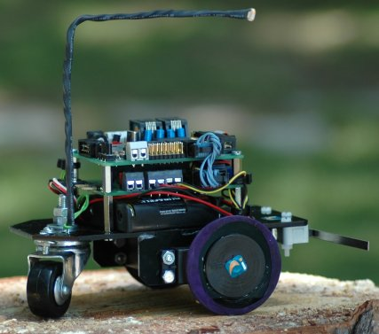
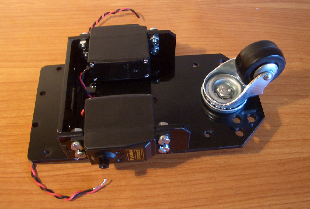
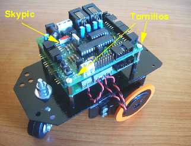

Esta página ya no se mantiene más (17/Junio/2008)
|
MICROBOT SKYBOT |

|
|
Esta página ya no se mantiene más (17/Junio/2008) |
SKYBOT es una evolución del robot Tritt. Tritt tenía una estructura basada en kits de LEGO y una electrónica basada en el microcontrolador 68hc11. (Tarjeta CT6811). Estos dos componentes se han quedado obsoletos y nos hemos visto en la necesidad de sustituirlos por otros, pero manteniendo la filosofía con la que se creó Tritt: Ser un robot sencillo pensado para aquellos que se quieren iniciar en el mundo de la micro robótica.
SKYBOT tiene una estructura hecha a medida, son piezas de metacrilato cortadas industrialmente por láser. De esta forma dejamos de depender de los kits de LEGO, que cada año cambiaban y nos obligaban a cambiar a nosotros también. La electrónica de control utiliza la tarjeta SKYPIC, y en este caso sobre ella montamos el microcontrolador PIC16F876A de Michochip. La tarjeta de potencia en la versión 1.0 era la tarjeta CT293+, pero en la versión 1.3 se ha cambiado por la SKY293 la cual añade un rele a la etapa de potencia y mejora la conexión de ambas tarjetas.
En SKYBOT se han añadido más sensores, en concreto lleva 4 sensores de infrarrojos de corta distancia, dos sensores de contacto y un sensor de luz. Los motores siguen siendo los servos Futaba 3003, trucados para poder funcionar como motores de corriente continua normales.
El nombre de SKYBOT surge de SKY, obtenido de la película Terminator, y usado en los nombre de la familia de tarjetas SKYPIC, SKY293, SKYNET, y de BOT en relación a roBOT. La idea de SKYBOT surge como ya hemos comentado antes por la necesidad de seguir teniendo un robot básico con el cual poder seguir impartiendo cursos de robótica.
La Universidad Pontificia de Salamanca en Madrid y la CampusBot (CampusParty 2005) han sido dos factores determinantes para el desarrollo de SKYBOT. Las fechas más importantes en la historia del robot son:
[Jul 2007]: Taller de Robótica en la Campus Bot. Campus Party 2007.
[Jul 2007]: Taller de Robótica en la Universidad Autónoma de Madrid para Institutos. UAM 2007.
[Feb 2007]: II Taller de Robótica en la Universidad Autónoma de Madrid. UAM 2007.
[Jul 2006]: Taller de Robótica en la Campus Bot. Campus Party 2006.
[Feb 2006]: I Taller de Robótica en la Universidad Autónoma de Madrid. UAM 2006.
[Nov 2005]: Taller de Robótica en la Universidad de Cádiz. UCA 2005.
[Jul 2005]: Taller de Robótica de la Campus Bot. Campus Party 2005.
[nov 2004]: IV Semana de la Ciencia en Madrid. Universidad Pontificia de Salamanca.
Estructura mecánica con piezas de metacrilato
Motores: servos Futaba 3003 trucados para girar 360 grados
tarjeta SKY293 para controlar dos motores, 4 sensores de infrarrojos del tipo CNY70 , hasta 6 bumpers y un rele
tarjeta SKYPIC para la programación del robot
Alimentación: entre 4.5 - 6 voltios. Se utilizan 4 pilas AA. Opcionalmente se puede utilizar una alimentación separada para los motores, comprendida entre 4-12 voltios. (Por ejemplo una pila de 9v). Para más infromación de como hacer esto consultar la página de la SKY293
Robot abierto. Están disponibles los esquemas de la estructura y la electrónica y se permite su copia y modificación
La estructura mecánica está compuesta por 7 piezas de metacrilato, dos servos Futaba 3003 trucados y una rueda loca. Ha sido diseñada por Andrés Prieto-Moreno Torres en base a su experiencia con otros robots anteriores. Se ha perseguido el objetivo de hacer una estructura fácilmente replicable en diferentes materiales como por ejemplo madera, PVC Expandido, etc. Las piezas de la estructura se unen entre ellas con pegamento (se pueden utilizar varios tipos como Plastic-Ceys, Loctite, Epoxy,..) y los motores se sujetan mediante tornillos normales de métrica 4. Todas la tornillería incluída la rueda loca se encuentra fácilmente en ferreterías.

SKYBOT v1.2 utiliza las tarjetas SKYPIC como procesadora y SKY293 como tarjeta de potencia. Ambas se unen formando una torre, colocándose encima de la estructura de metacrilato. Esta electrónica es independiente de la estructura. Es decir, podemos utilizar la estructura del robot con otro tipo de controladores electrónicos, y al contrario , adaptar la estructura o cambiarla por otra y mantener la electrónica.

El número de aplicaciones para programar los microcontroladores PIC ha proliferado mucho. Desde la propia Microchip, fabricante del PIC, hasta numerosas personas independientes han desarrollado compiladores, editores, cargadores, etc. Nosotros hemos seleccionado algunas de ellas y realizado nuestros propios programas para completar un entorno de desarrollo fácil de usar. El gran artifice de todo este despliegue ha sido, una vez más, Juan González Gómez.
SKYBOT cuenta con un entorno válido para Linux y Windows XP. Todos los programas son Software Libre y se encuentran en internet, las referencias las podemos encontrar más abajo en la documentación del robot y en concreto en la sesión 3. Entre todas las alternativas hemos optado por programar el robot en C y usar un bootloader previamente grabado en el microcontrolador para descargar los programas en él. Pero también se puede programar en ensamblador y si no queremos usar el bootloader se puede grabar el programa con la gran mayoría de grabadores para PICs. Incluyendo la propia SKYPIC e incluso la grabación directa mediante el puerto paralelo y programas como el ICPROG o el PICDEV.
Todo el software está bajo licencia GPL, por lo que las fuentes están disponibles.
La versión actual del robot es la v1.3.
La
diferencia con respecto a la v1.2. son las ruedas que se han cambiado
por unas a medida que en lugar de usar el globo llevan una junta
tórica para mejorar el agarre. Para todos aquellos que querais
construiros el robot artesanalmente sigue siendo recomendable y más
fácil usar el método anterior.
La documentación
de la versión v1.3. la podeis encontrar aquí.
Documentación V1.4
Versiones anteriores del SKYBOT
Todos aquellos
que tengais la version 1.2 del SKYBOT, todos los posteriores a
Noviembre 2005 y anteriores a Febrero 2006, teneis la documentacion
dividida en cuatro sesiones que se corresponden con el taller de
robótica de la Universidad de Cadiz en 2005.Taller
UCA 2005 La podemos dividir en los siguientes capítulos o
sesiones:
Sesión 1: Comenzar la construcción de la estructura y trucar los servos
Sesión 2: Finalizar la estructura, conectar los sensores y probar el robot
Sesión 3: Instalación del software. Programa Hola mundo.Programación del robot
Sesión 4: Seguimiento de línea, montaje de los sensores de contacto y programación para el concurso del mogollón
Los SKYBOTs anteriores a Noviembre 2005 son la versión 1.0. Su lanzamiento coincidió con el taller de la CampusBot (Campus Party 2005), por lo tanto la documentación de montaje es la propia del taller. En el siguiente enlace podemos encontrar toda la Información del taller. La podemos dividir en los siguientes capítulos o sesiones:
Sesión 1: Comenzar la construcción de la estructura y trucar los servos
Sesión 2: Finalizar la estructura, conectar los sensores y probar el robot
Sesión 3: Instalación del software. Programa Hola mundo.Programación del robot
Sesión 4: Seguimiento de línea, montaje de los sensores de contacto y programación para el concurso del mogollón
También hay documentación disponible en el Wiki
|
RECORRIDOS DE PRUEBA |
|
Circuito de pruebas 1 para que SkyBot lo recorra. Imprimir en papel A4 con impresora Láser |
|
|
circuito-skybot-1.fig(0'6KB) |
Circuito de pruebas 1. Fuentes para Xfig |
|
Circuito de pruebas 2 para que Skybot lo recorra. Imprimir en papel A4 con impresora Láser |
|
|
circuito-skybot-2.fig(0'6KB) |
Circuito de pruebas 2. Fuentes para Xfig |
|
PLANOS DEL ROBOT |
|
Plano Skybot en formato DXF, compatible Autocad y QCAD |
|
|
Plano Skybot en formato PDF |
|
EJEMPLOS PARA SKYBOT V1.4 |
|
MULTIMEDIA |
|
Foto lateral del robot v1.0 |
|
|
Foto frontal del robot v1.0 |
|
|
Otra foto lateral del robot v1.0 |
|
|
Foto de cerca del robot v1.0 |
|
|
Maqueta preliminar de SKYBOT |
El Robot SkyBot esta publicada bajo la licencia Creative Commons en la versión Attribution and Share Alike. Es decir se permite copiar, modificar y distribuir este material siempre que se reconozca al autor y se mantenga la misma licencia
| Ponerse en contacto con Ricardo Gómez en ricardo@iearobotics.com |
A Juan González Gómez por la mágnifica documentación del robot, por las pruebas realizadas y por el entorno de desarrollo que ha montado.
A Alejandro Alonso por confiar en el SkyBot y por todas las sugerencias para mejorar el concepto inicial.
A todo el equipo de Ifara Tecnologías, por financiar y comercializar el SkyBot v1.0, v1.2 y v1.3
13/feb/2006: Actualizada la WEB para ajustarse al SKYBOT v1.3.
12/dic/2005: Actualizada la WEB para ajustarse al SKYBOT v1.2.
11/dic/2005: La nueva versión del SKYBOT es la 1.2. Su manual se corresponde con el taller de Cadiz 2005.
23/jul/2005: Publicada información de SKYBOT v1.0 en esta web
{kind=link}
{kind=link}
{kind=link}
{kind=link}
{kind=link}